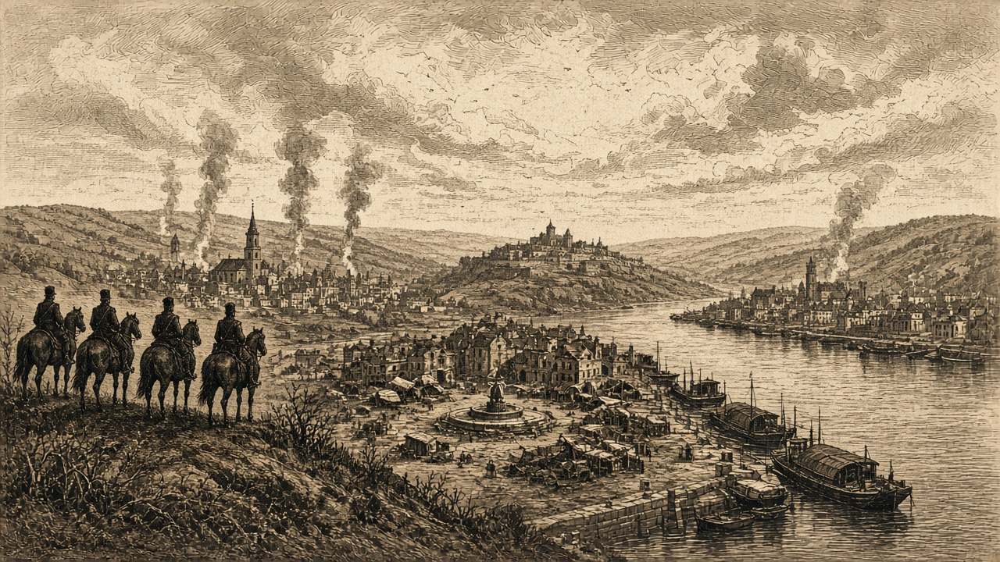

テキスタンの大都市、白波・銀嶺の町が相次ぎ陥落
なのです、紅峰の兵站三か所を制圧 投降者三千人 艦砲で紅峰の町と軍港を破壊 火災二十五件・十万一千百人

【総合部】第185期、三つの都市がそれぞれ別の国に占領された。泰平天国はテキスタン共和国の大都市（42,19）、あろあろ国は白波王国の町（70,20）、チェス＝シロバキア共和国は銀嶺侯国の町（77,27）を占領した。詳報は4面・5面。
なのです主義人民共和国は紅峰公国の兵站基地（41,57）（40,59）（39,57）の三か所を占領し、各地で予備兵千人が投降した。投降者は合わせて三千人。なのですの戦艦が首都ローテンホルン（41,52）周辺へ艦砲射撃を行い、紅峰の部隊（41,53）が全滅した。艦砲は紅峰の町（42,51）で七百人が犠牲になり、軍港（38,60）を累計三発で破壊した。詳報は3面。
火災二十五件、死者十万一千百人
第185期の火災は二十五件で、犠牲は十万一千百人。チェス＝シロバキア共和国が十か所・四万四千五百人、泰平天国が七か所・二万八千人と多い。詳報は6面。チェスの十件は都市四か所と町六か所に及び、一地点で六千百人が犠牲となった。泰平の七件は北部の都市から南部の町まで広がり、最大の都市火災では五千百人が亡くなった。